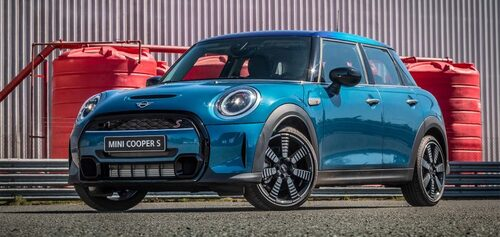
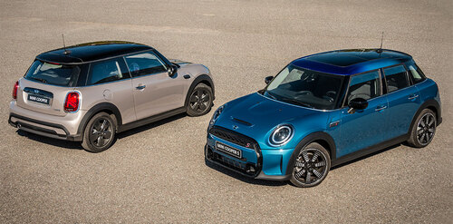
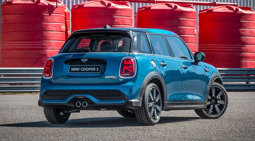
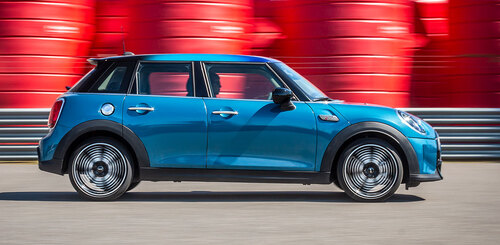
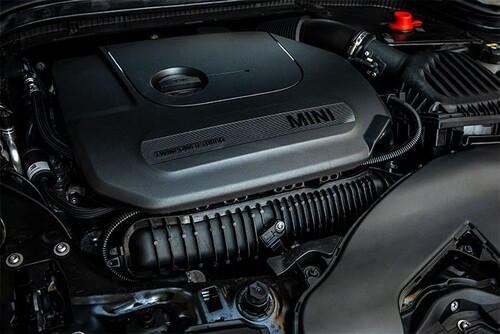
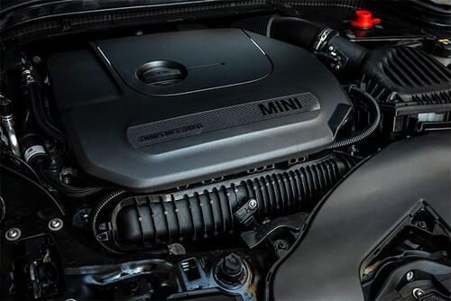

Nuevo MINI Cooper 2022 (LCi): lanzamiento en Argentina, desde U$S 49.900
La firma británica presentó en nuestro país una nueva actualización del hatchback, en sus versiones de 3 y 5
puertas. Con leves retoques estéticos, incorpora más tecnología y asistencias a la conducción en toda la gama.
Mecánicamente, mantiene los motores TwinPower turbo de 136, 192 y 231 CV asociados a las cajas automáticas
Steptronic de 7 y 8 velocidades.

Momento de renovación para la gama de MINI en Argentina: tras la llegada del Countryman, ahora fue el turno
del facelift de las versiones hatchback de 3 y 5 puertas, que recibieron una sutil actualización estética,
pero incorporando más tecnología –especialmente en seguridad con el agregado de varios sistemas de
asistencia a la conducción- y manteniendo las motorizaciones ya conocidas.
Otra novedad es que el portfolio fue replanteado, con nuevas denominaciones para las versiones y una gama
algo más acotada ya que perdió la opción Cabrio, entre otras.

Al respecto, Leandro Larregina, Gerente de Ventas y Desarrollo de Red de Concesionarios de BMW y MINI de
Argentina, afirmó: “Estamos introduciendo en el país la renovación del clásico MINI hatch, sinónimo de
deportividad y diseño. Un vehículo que nos provoca emociones únicas a la hora de conducirlo e incorpora
nuevas asistencias a la conducción y conectividad. En Cuano a lo deportivo, la increíble sensación del
Go-Kart Feeling sigue provocando esa diversión que sólo puede comprobar quien alguna vez se haya ubicado
detrás del volante de un MINI”.

En un facelift de la cuarta generación del MINI hatchback. Como en cada actualización, los cambios estéticos
son realmente sutiles y se concentran especialmente en el sector frontal: los faros ahora son 100% de Led y
gracias a su mayor poder lumínico y alcance, se eliminaron los faros antiniebla. Esto hizo que el paragolpes
también se haya modificado: la parrilla cuenta con un marco que se une a la toma de aire inferior de color
negro brillante, mientras que en los extremos, donde antes se alojaban los faros auxiliares, posee una
pequeño canalizador de aire. Así, su apariencia se ve algo más simple y sobria, sin perder la identidad
MINI.

De perfil, la novedad son las llantas de aleación, con una amplia variedad de diseños y tamaños, para que
cada cliente personalice su unidad a gusto. Por último, en la parte trasera, el paragolpes cuenta con un
aplique negro más grande y los faros, que replican en su interior la Union Jack británica, poseen una
máscara oscurecida.
Equipamiento de seguridad:
Toda la gama cuenta con 7 airbags, frenos a disco en las cuatro ruedas con ABS/EBD/BA, control de tracción,
control de estabilidad, sensor de colisión, anclajes Isofix, cinturones de seguridad inerciales de tres
puntos y apoyacabezas en las 5 plazas, indicador de presión de los neumáticos y luces antiniebla.
En cuanto a asistencias a la conducción, las tres versiones disponen de control de velocidad crucero
adaptativo, alerta de cambio de carril involuntario, aviso de colisión frontal y frenado autónomo de
emergencia. La versión JCW agrega asistente de estacionamiento.
Mecánica:
La gama del hatchback está compuesta por tres motorizaciones nafteras:
.jpg) 

- 1.6 de tres cilindros en línea con tecnología Twin Power Turbo (inyección directa y turbo twin scroll)
que desarrolla 136 CV y 220 Nm de par, acoplado a una caja automática de doble embrague Steptronic de 7
marchas para las versiones Classic.
- 2.0 de 4 cilindros en línea con tecnología Twin Power Turbo, que entrega 192 CV y 280 Nm de torque,
acoplado a la caja automática de doble embrague Steptronic de 7 marchas (con relaciones más cortas y
levas al volante) para las versiones Classic Confort.
- 2.0 de 4 cilindros en línea con tecnología Twin Power Turbo, que eroga 231 CV y 320 Nm de par, asociado
a una caja automática Steptronic de 8 velocidades (con levas al volante) para la versión John Cooper
Works.